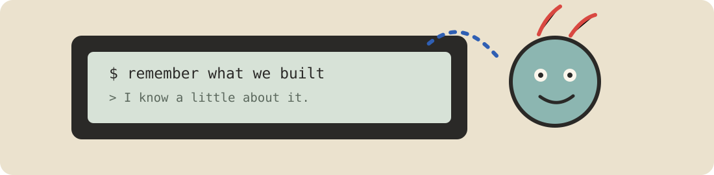
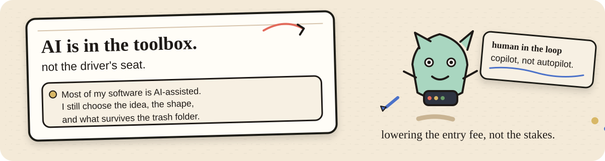
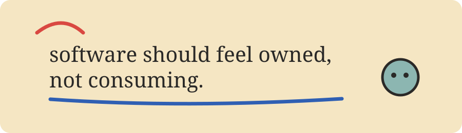

FreeShelf
01Free games worth claiming, before the offer ends.
Web ProjectProduct
open ↗A growing collection
below is a slightly untidy collection of websites, software, tools, experiments and ideas.
see itcome in.
Some became products. Some stayed tools. A few are still deciding what they are.
The shelves below are ordered by how much of me is in them.
the work I keep coming back to.
Free games worth claiming, before the offer ends.
Watch movies and webseries for free!
A desktop AI companion I kept rebuilding. Version 1.6 runs on Windows.
A timed figure and gesture drawing tool for Artists. Add a reference, set the timer and draw.
things I use and keep working on.
Makes you pause before opening the apps you meant to avoid.
Terminal notes with Vim-style movement, local persistence and a small AI companion.
Asks why you are opening Instagram before letting you in.
Impromptu speaking practice: prompt, think, record, transcribe, review.
smaller things, still useful.
News filtered into something closer to useful information.
Portable shell tooling for an offline development lab that fits in a pocket.
Terminal-based typing practice. Small, local, stubbornly keyboard-first.
A conversational CLI with two modes: one pacifies, the other pushes back.
The one that started it all. Try it?
somewhere fighting my lazy ass and asking for more time.
01 Can software help us reclaim our attention?
02 Can a mountain of information become one useful thing?
03 Can a piece of code feel like a deliberate presence instead of another tab asking for attention?

I am still responsible for the mess.

AI makes the first step cheaper.
Most of my software is AI-assisted in one way or another. Sometimes that means a stubborn function. Sometimes it means a rough first pass. Sometimes it means an irresponsible amount of code and me pointing at the screen saying, no, not like that.
I do not treat that as shame, and I do not treat it as authorship either. The intent, taste, rejection, debugging and decisions still have to come from somewhere {me!} (^ ^)/
It's copilot, not autopilot.
This has produced some good software, some weird software, AND several folders named final-real-this-time.
FreeShelf and Jen1 are the clearest web-facing work right now.
The rest DO matter, even if not everyone gets them. Tools, experiments and half-formed ideas are still allowed to stay on the wall.
